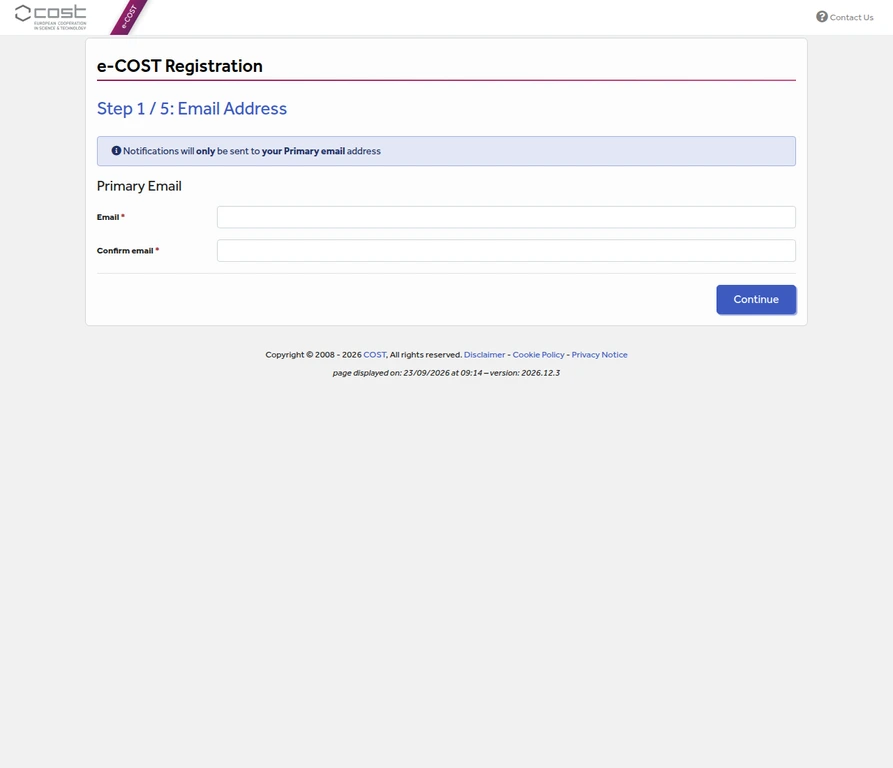
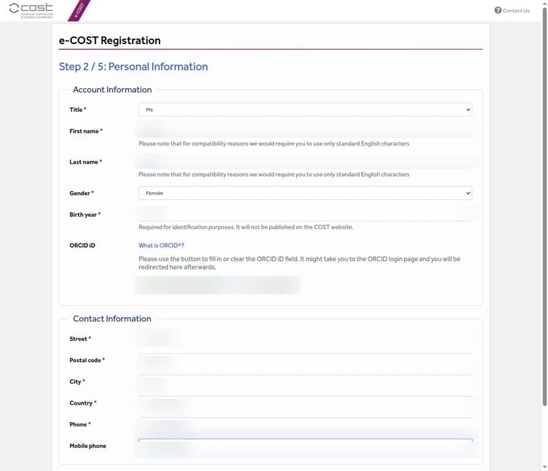
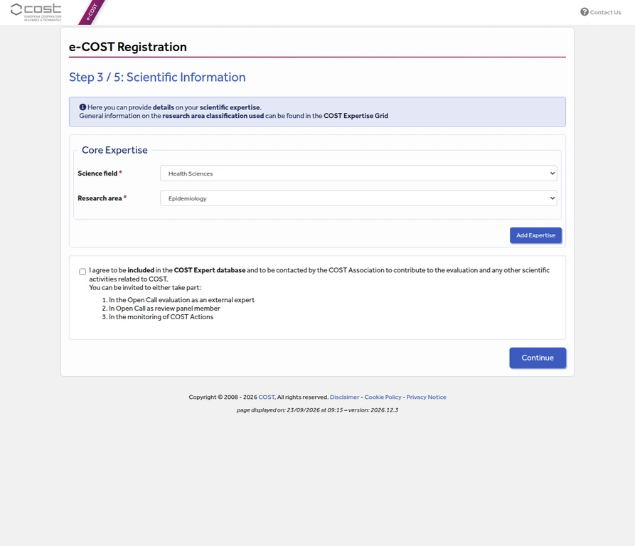
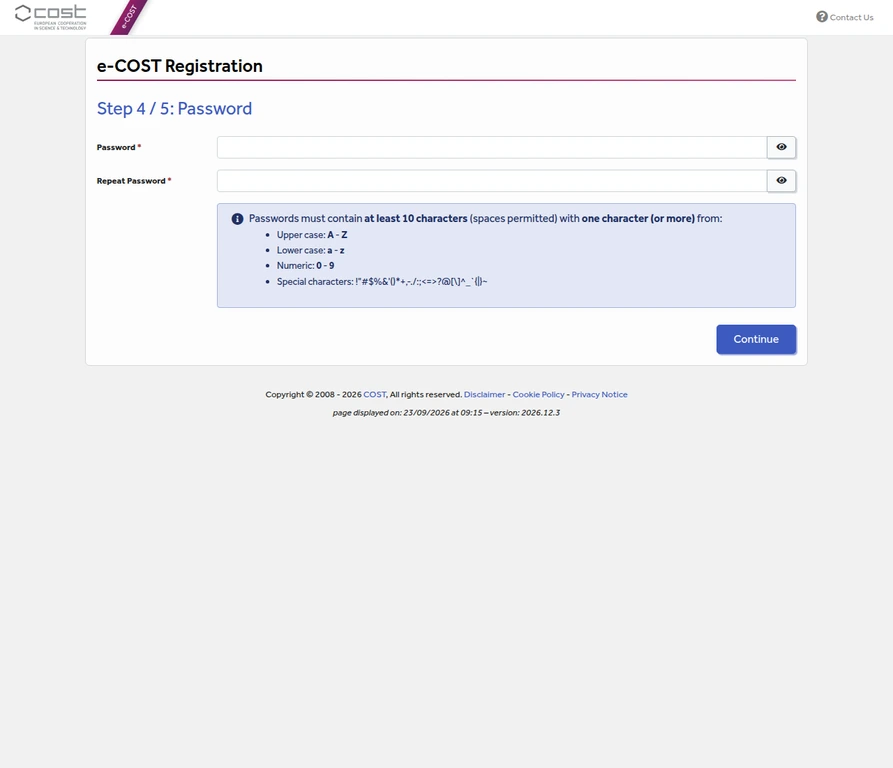
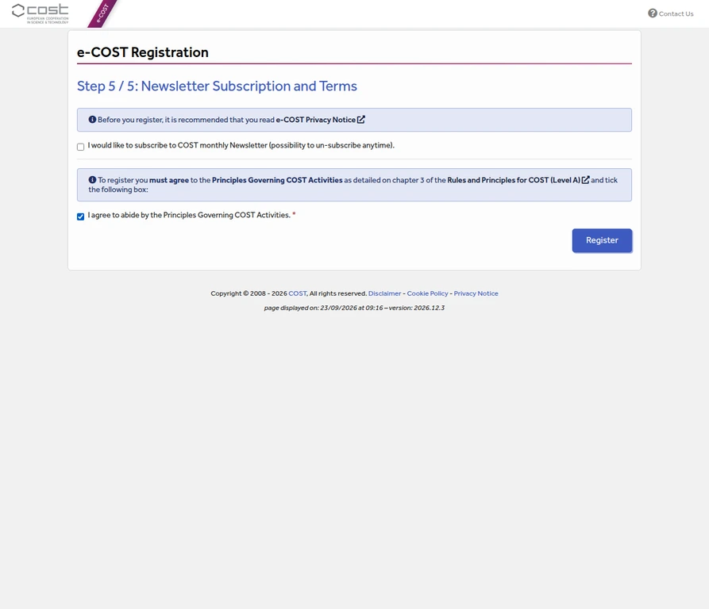
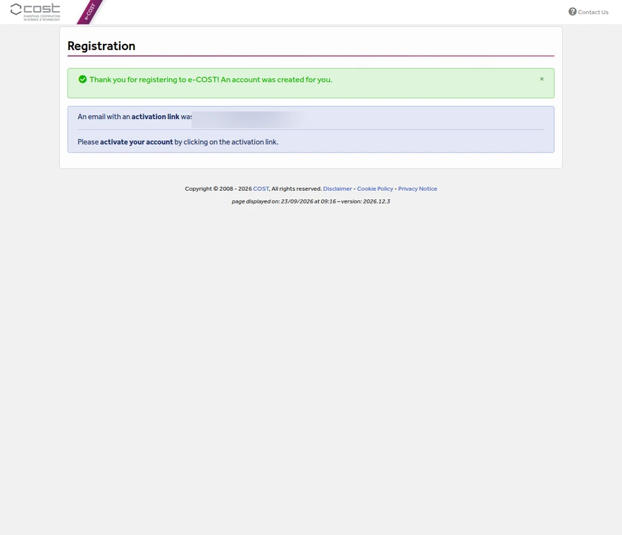
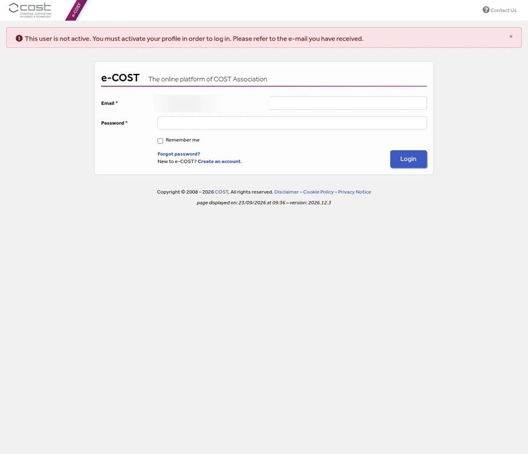
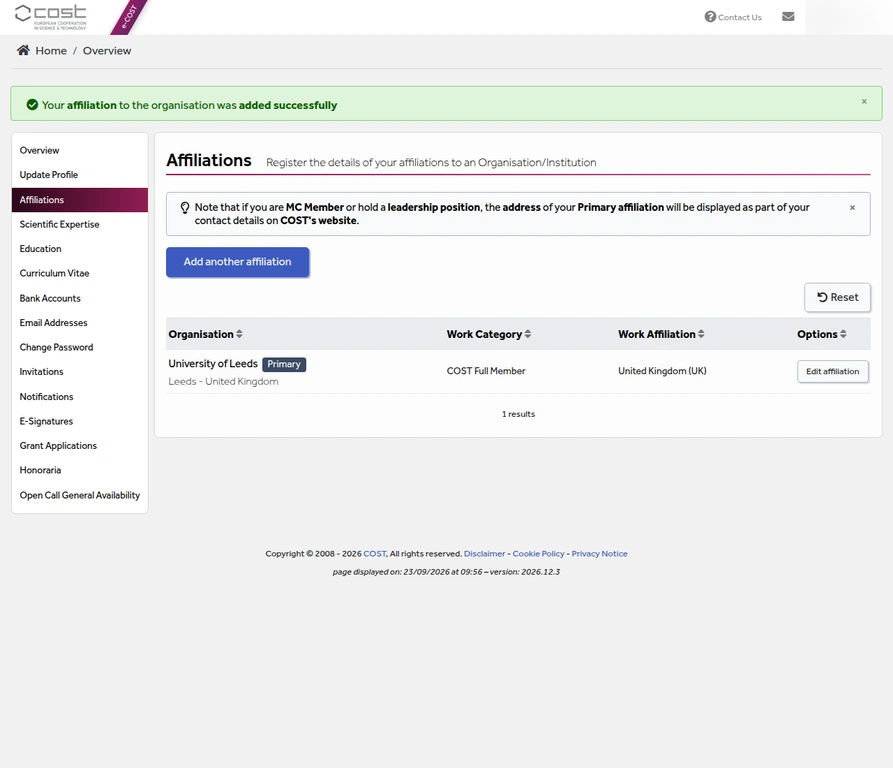
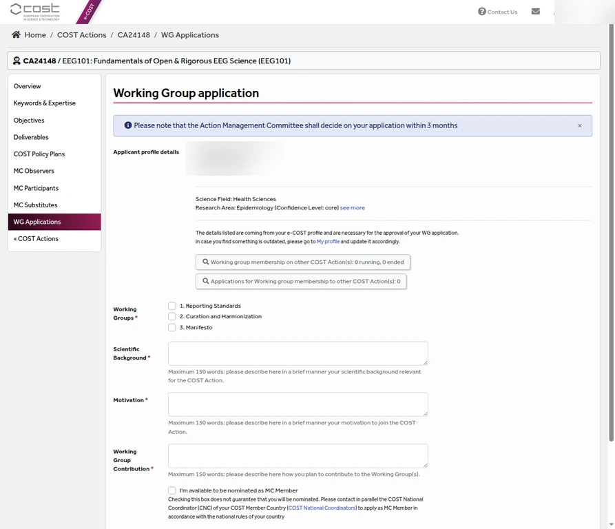

How to register for EEG101 via e-COST
This guide follows the e-COST account-registration flow used to prepare an EEG101 membership application. The screenshots are from the live e-COST interface and have been redacted so that personal information is not published.
Before you start
Membership of EEG101 is free and open to researchers and professionals who meet the relevant COST participation rules. Read the official EEG101 joining instructions first. You will need a working email address, your personal details, a research-area classification, and a password that meets e-COST’s requirements.
Step 1. Open e-COST registration
Open e-COST registration. Enter the applicant’s primary email address twice. e-COST sends notifications, including the activation message, only to this primary address. Select Continue.

Step 2. Complete personal information
Enter the applicant’s title, first name, last name, gender, and birth year. The birth year is required for identification and is not published on the COST website. The form also asks for an ORCID iD, address, country, phone, and mobile phone. ORCID is optional, but it is useful for distinguishing researchers with similar names.

Step 3. Add scientific information
Choose the science field and research area that best match the applicant’s work. For a pharmacoepidemiology profile, the example selection is Health Sciences followed by Epidemiology. The COST expert-database checkbox is optional. Leave it unchecked unless the applicant separately wants to be contacted for COST expert activities. Select Continue.

Step 4. Create a password
Enter the same password twice. e-COST requires at least 10 characters, including at least one uppercase letter, one lowercase letter, one number, and one special character. Store the password securely; do not include it in screenshots or publish it in the guide.

Step 5. Review terms and register
The monthly COST newsletter is optional. The checkbox agreeing to the Principles Governing COST Activities is required. Tick the required agreement and select Register.

Step 6. Activate the account
After registration, e-COST displays a confirmation and sends an activation link to the primary email address. The account holder must open that message and follow the activation link. If the message does not arrive, check spam or junk folders and use the email address entered in Step 1.

Step 7. Confirm activation before applying
Return to the e-COST login page and sign in after following the activation link. An unactivated account cannot log in or open the Working Group application. If you see the message below, wait until the activation email has been completed.

Step 8. Complete the required profile affiliation
After activation, e-COST may redirect the account to the profile overview and require a current primary affiliation before opening the Working Group form. Select Add affiliation, search for the applicant’s organisation using at least four letters, and choose the validated organisation record. Select the applicant’s actual work address, then enter the department, job position, and institutional website. Save the affiliation and confirm that it appears as the primary affiliation.

Step 9. Open the Working Group application
Once the account is activated and the profile is complete, sign in to e-COST and open the EEG101 Working Group application page. The form displays the applicant’s profile details and research area, then asks the applicant to choose one or more Working Groups:
- 1. Reporting Standards: standardised reporting, templates, pre-registration, and reproducible EEG methods.
- 2. Curation and Harmonization: FAIR EEG data, harmonised pipelines, and cross-laboratory data comparability.
- 3. Manifesto: ethical, open, and sustainable principles for EEG research. The EEG101 website presents this work as the EEG Community Framework.

Step 10. Write the three application responses
The form contains three required text areas. Each response has a maximum of 150 words:
- Scientific Background: describe the applicant’s relevant scientific background.
- Motivation: explain why the applicant wants to join EEG101.
- Working Group Contribution: explain how the applicant plans to contribute to the selected group or groups.
Two additional availability checkboxes ask whether the applicant is available to be nominated as an MC Member or to substitute an MC Member or Observer. These are optional and should be selected only when the applicant intends to pursue those roles. The form offers Save and Save and Submit; use Save for a draft and Save and Submit only after reviewing the Working Group choices and all three responses.
The e-COST form states that the Action Management Committee decides on applications within three months. The official COST Action page also asks prospective participants to read the Action Description and inform the Main Proposer or Chair of their interest. Approval is handled through the COST Action process; account creation alone does not complete EEG101 membership.